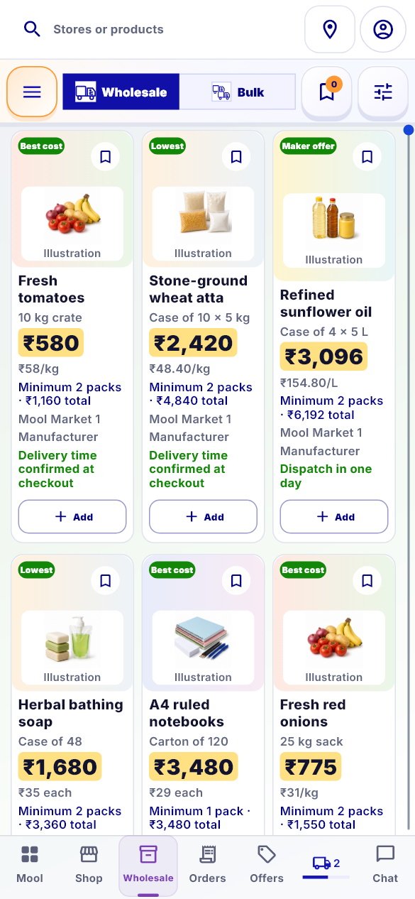
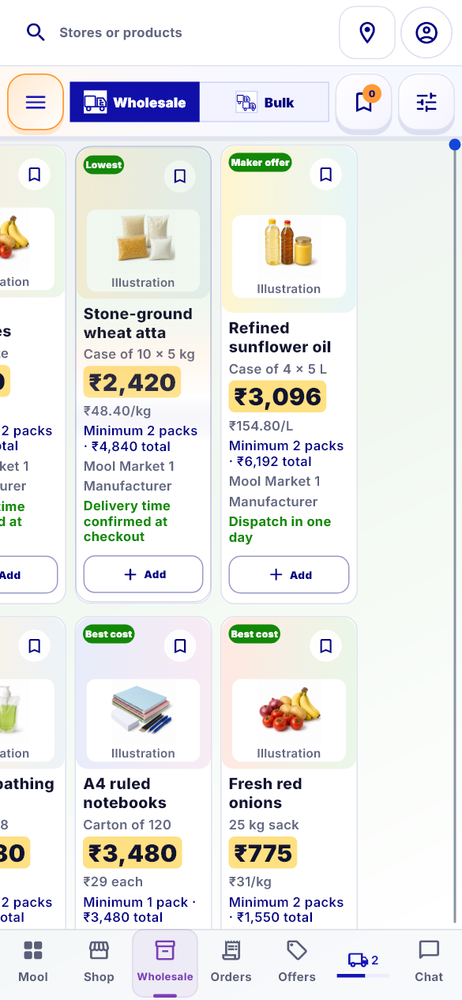
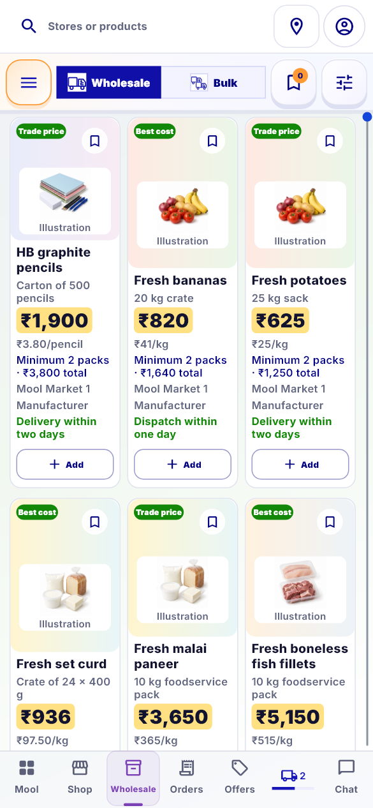
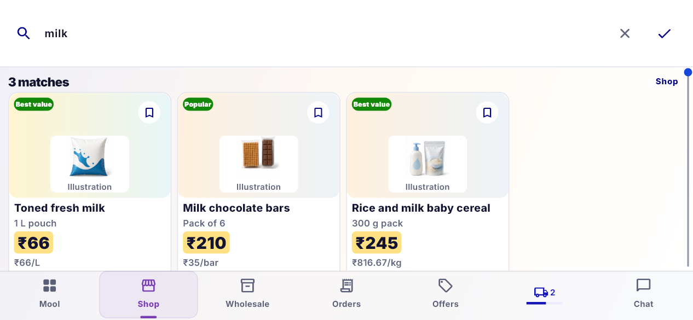

Buy corrections — local visual review
Actual Flutter captures using local test data and the app's Inter font. These are evidence frames, not a replacement app or OPPO captures. Click any image to inspect it at full size.
C04 · Three columns move together
The middle frame is captured while the finger is still held down. All columns move horizontally; the header and bottom navigation stay fixed. The final frame is the next real catalogue page.
Wholesale frames
Before
During drag
After release
C06 · One search loading indicator
The shared progress line stays visible until both Store and product requests finish. Product results can be empty while Store results are still loading; these independent states remain truthful. The delivery shortcut is unchanged.
C07 · Buy remains open after rotation
The actual application route retains Shop, the “milk” query and category across three portrait/landscape cycles. A separate regression reproduced a launcher gesture crossing rotation and confirmed that cancelling that stale touch prevents the menu opening; fresh taps still work.
Landscape — query retained, Mool menu closed
Local review only. The original physical-device trigger still needs OPPO verification after founder approval. Eleven focused checks passed; 47 connected checks passed. Five older navigation-layout assertions also fail against original c4365373 source and remain documented failures. Analysis found no issues.